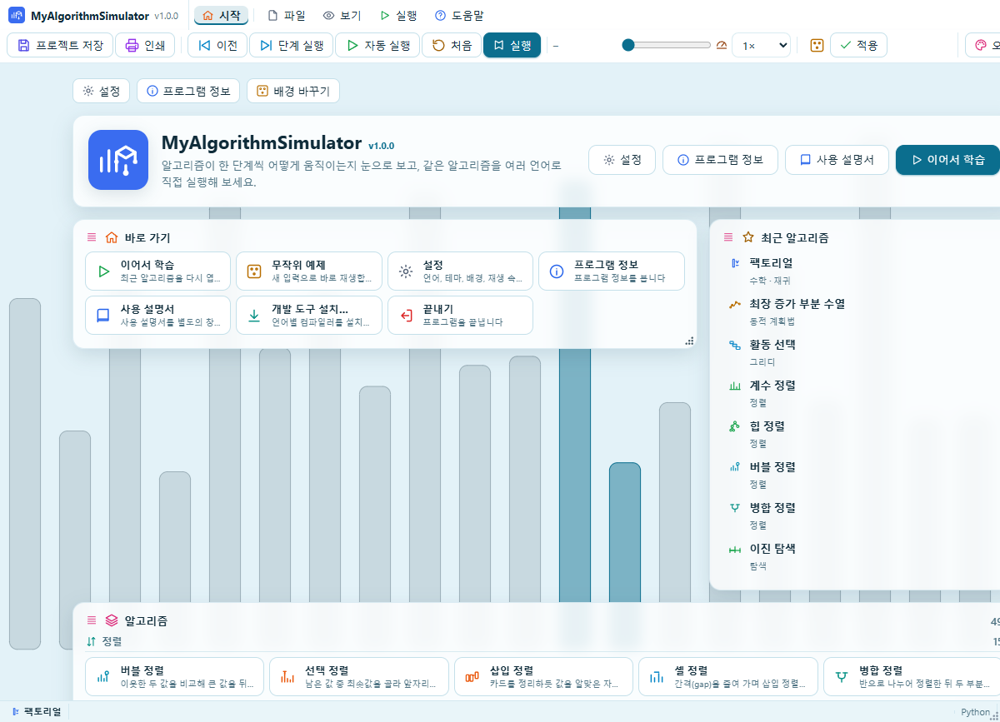
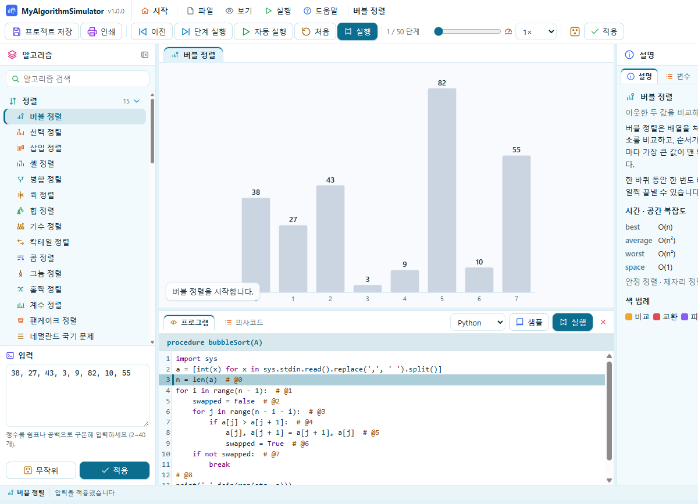
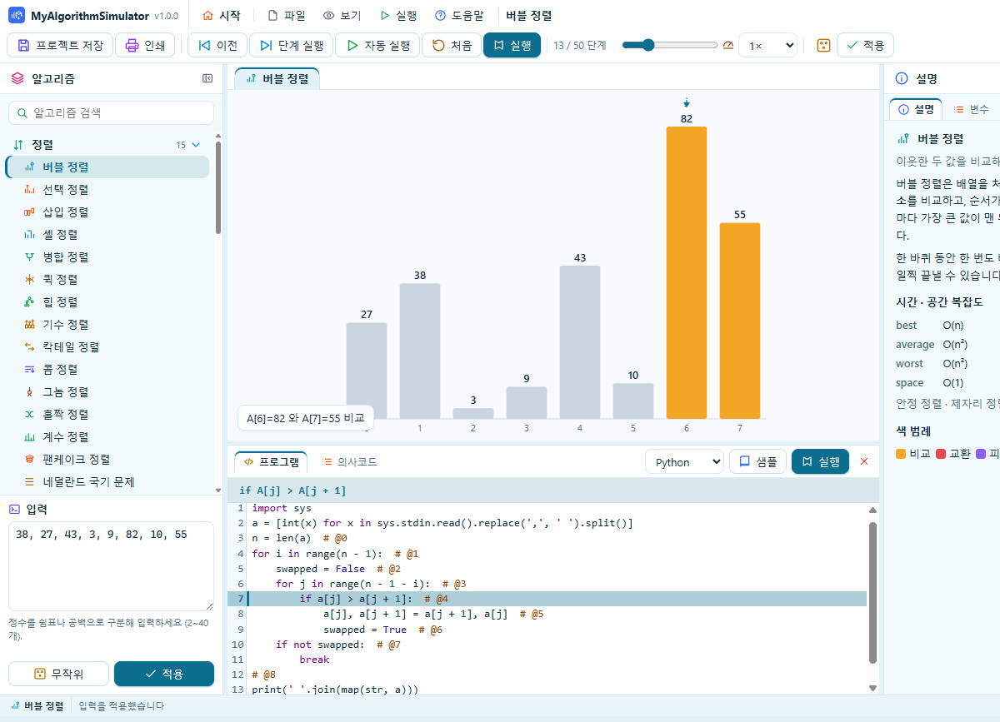
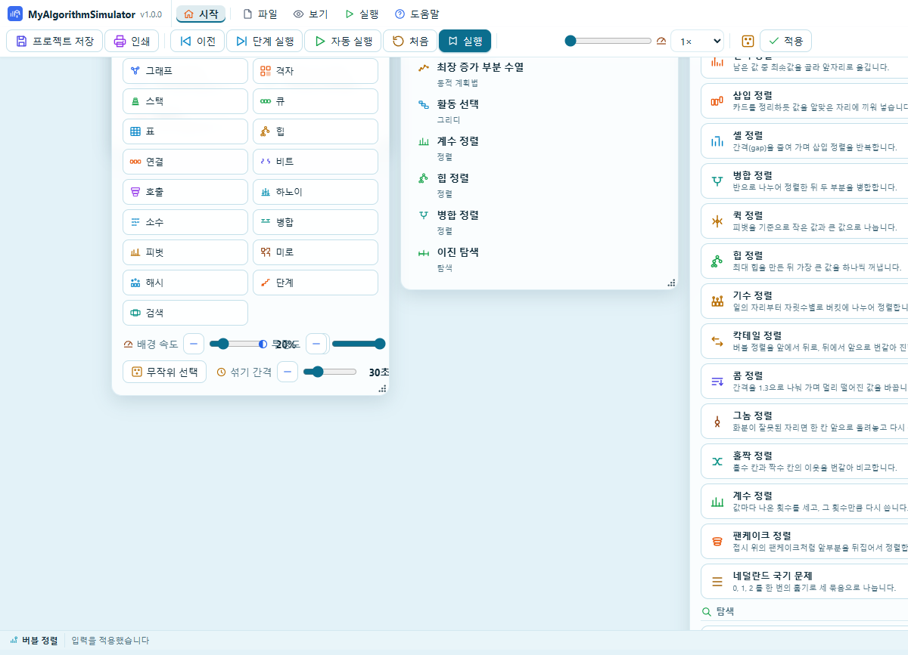

사용 설명서
시작하기

MyAlgorithmSimulator는 알고리즘이 한 단계씩 어떻게 움직이는지 그림으로 보고, 같은 알고리즘을 여러 프로그래밍 언어로 읽어 보고 실행해 보는 학습 프로그램입니다.
처음 열면 시작 화면이 나옵니다. 움직이는 배경 위에서 알고리즘을 고르거나, 이어서 학습으로 최근에 보던 알고리즘을 다시 엽니다.
- 설정은 재생 속도, 시작 화면 배경, 배경 속도와 투명도를 바꿉니다.
- 프로그램 정보는 버전과 만든 이를 보여 줍니다.
- 사용 설명서는 지금 보고 있는 이 창을 엽니다.
화면 구성

알고리즘을 열면 창이 네 부분으로 나뉩니다.
- 왼쪽은 알고리즘 목록과 입력입니다. 목록은 정렬, 탐색, 그래프처럼 종류별로 묶여 있고, 각 알고리즘에 자기 아이콘이 있습니다.
- 가운데는 지금 단계의 그림입니다. 비교 중인 값, 교환, 방문한 정점, 경로가 색으로 구분됩니다.
- 아래는 프로그램 창입니다. 프로그램 탭은 소스 코드, 의사코드 탭은 그 단계의 문장입니다. 그림이 바뀌면 해당하는 줄이 함께 강조됩니다.
- 오른쪽은 설명, 그 단계의 변수, 코드를 실행한 결과입니다.
메뉴의 보기에서 왼쪽 패널, 오른쪽 패널, 프로그램 창을 숨기거나 다시 보일 수 있습니다.
단계로 보기

도구 모음으로 알고리즘을 한 단계씩, 또는 자동으로 진행합니다.
- 이전과 단계 실행은 한 단계 뒤와 앞으로 이동합니다.
- 자동 실행은 단계가 끝날 때까지 그림을 넘깁니다. 한 번 더 누르면 멈춥니다.
- 처음은 첫 단계로 돌아갑니다.
- 슬라이더는 원하는 단계로 바로 이동합니다.
- 속도 메뉴는 0.25배에서 8배까지입니다.
단계가 바뀔 때마다 가운데 그림, 아래쪽 문장, 소스에서 표시된 줄, 오른쪽 변수 값이 같은 단계를 가리킵니다. 소스에 단계 표시가 있는 줄만 빛납니다. 표시가 없는 알고리즘은 문장 안내만 바뀝니다.
코드와 샘플
프로그램 창에서 언어를 고르면 그 언어의 샘플이 열립니다. 언어는 C, C++, Java, Python, Go, Rust, JavaScript입니다.
샘플은 왼쪽 입력 상자의 내용을 표준 입력으로 읽고, 결과를 표준 출력으로 씁니다. 코드를 고쳐 보고 샘플로 처음 코드를 다시 불러올 수 있습니다. 파일 메뉴에서 코드를 저장하거나 기존 파일을 엽니다.
Java 프로그램의 클래스 이름은 Main이어야 합니다.
코드 실행
실행은 지금 편집 중인 코드를 컴파일하고 실행한 뒤, 오른쪽 실행 결과에 출력합니다. 실행 시간은 15초를 넘기면 멈춥니다.
웹 브라우저에서는 JavaScript만 실행됩니다. C, C++, Java, Python, Go, Rust는 데스크톱 앱에서 실행됩니다. 컴파일러가 없으면 개발 도구 설치에서 설치할 수 있습니다. Windows는 winget, macOS는 Homebrew, Linux는 apt 또는 dnf를 사용합니다.
입력
왼쪽 아래 입력 상자는 그 알고리즘이 받는 값입니다. 정렬은 정수 목록, 문자열 알고리즘은 글, 그래프는 간선, A*는 격자입니다.
- 적용은 고친 입력으로 단계를 처음부터 다시 만듭니다.
- 무작위는 새 입력을 만듭니다.
- A* 격자는 그림을 클릭해 벽을 넣거나 지울 수 있습니다.
S는 시작,G는 목표,#는 벽입니다.
입력 형식이 맞지 않으면 상자 아래에 이유가 표시되고 그림은 이전 단계를 유지합니다.
테마, 배경, 언어

도구 모음의 테마 버튼은 지금 테마 이름을 보여 주고, 누르면 밝은 테마와 어두운 테마 목록이 열립니다. 고른 테마는 이 설명서 창에도 그대로 적용됩니다.
시작 화면의 배경은 스물한 가지이고, 막대·트리·그래프·격자처럼 알고리즘이 움직이는 그림입니다. 이름을 고르거나 배경 바꾸기로 다른 배경을 고르고, 속도와 투명도는 슬라이드와 감소·증가 버튼으로 0~100% 사이에서 바꿉니다. 속도의 기본값은 20%입니다. 무작위 선택을 켜면 섞기 간격마다 다른 배경으로 바뀝니다. 간격은 5초에서 120초입니다.
언어 버튼은 국기로 표시됩니다. 화면이 한국어이면 영국 국기, 영어이면 한국 국기입니다. 누르면 메뉴와 설명이 그 언어로 바뀝니다. 이 창의 국기 버튼은 설명서의 언어만 바꿉니다.
단축키
| 키 | 동작 |
|---|---|
| Space | 자동 실행 / 일시정지 |
| → | 한 단계 앞으로 |
| ← | 한 단계 뒤로 |
| Home | 첫 단계 |
| R | 무작위 입력 |
| Ctrl+Enter | 입력 적용 |